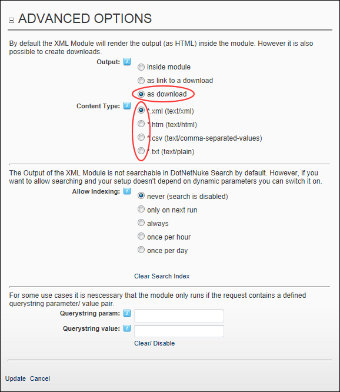
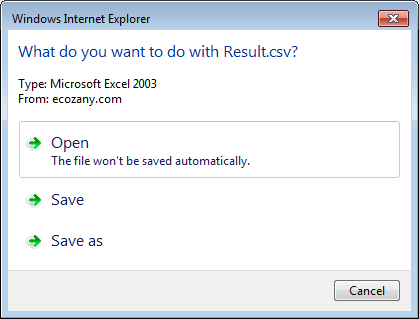

Setting XML/XSL Output to Download
How to set the results of an XML/XSL transformation to automatically download from a page.
Warning. This setting changes the way page navigation typically works. When a user chooses to navigate to the page where this module is located a file download message is displayed rather than the site page. This prevents you from navigating to the page and managing the content of modules on that page. It is recommended that XML modules which are set As Download are the only module on the page. A workaround for this problem is to display the site in Layout Mode (See "Overview of the ControlBar Control Panel" or See "Overview of the RibbonBar Control Panel") and then navigate to the page. In Layout mode you can access the Module Settings page for any module and then move it to a new page. For example, this allows you to move the XML module to a page where no other modules are located.
- Select
 Edit Module Configuration from the XML/XSL module actions menu. This opens the XML Module Configuration page.
Edit Module Configuration from the XML/XSL module actions menu. This opens the XML Module Configuration page.
- Maximize
 the Advanced Options section.
the Advanced Options section.
- At Output, select As download to automatically download the output.
- At Content Type, select the type of file for the download from these options: *.xml (text/xml), *.htm (text/html), *.csv (text/comma-separated-values), or *.txt (text/plain)

- Click the Update link.
To test this setting, navigate to the page where the module is located. A download message similar to the image below is displayed.
